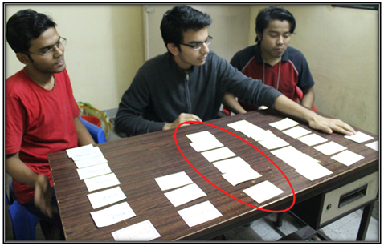
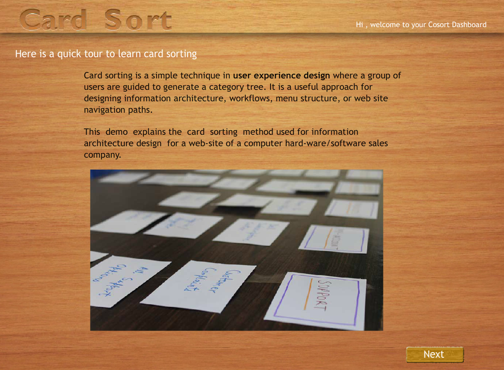
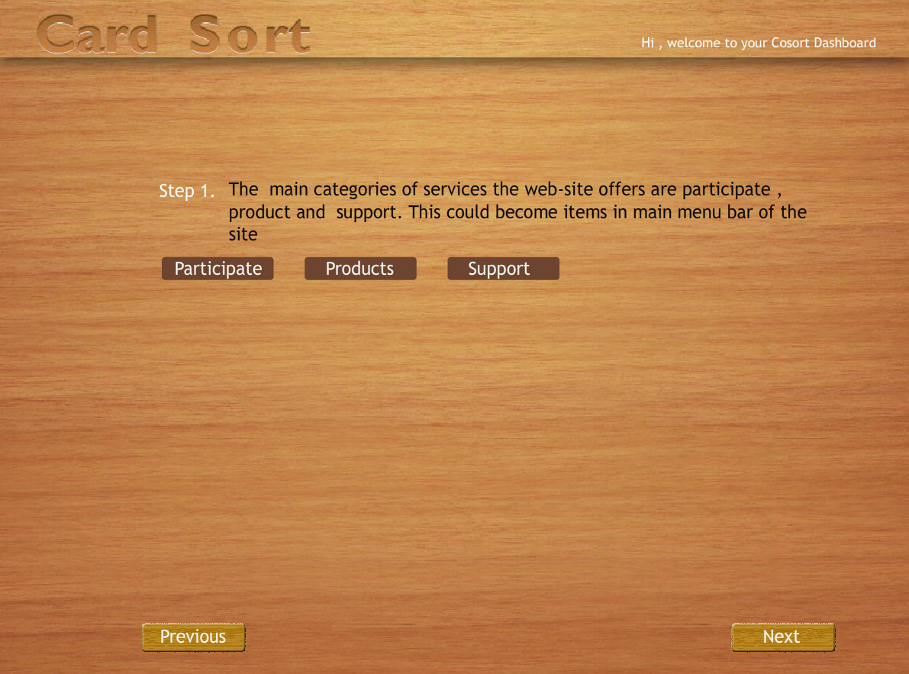
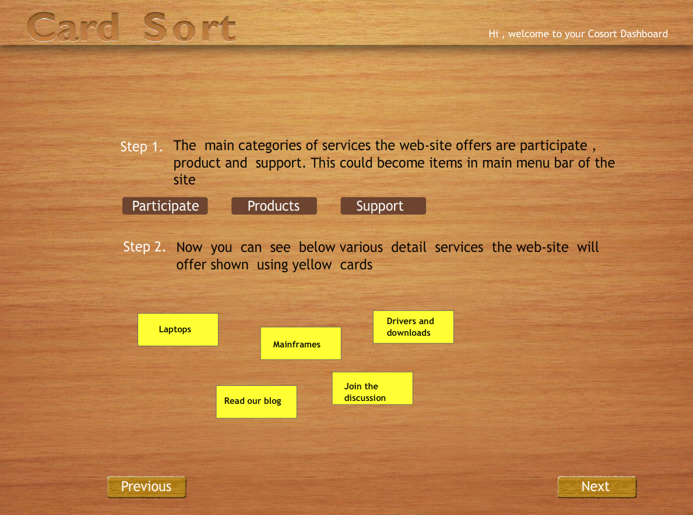
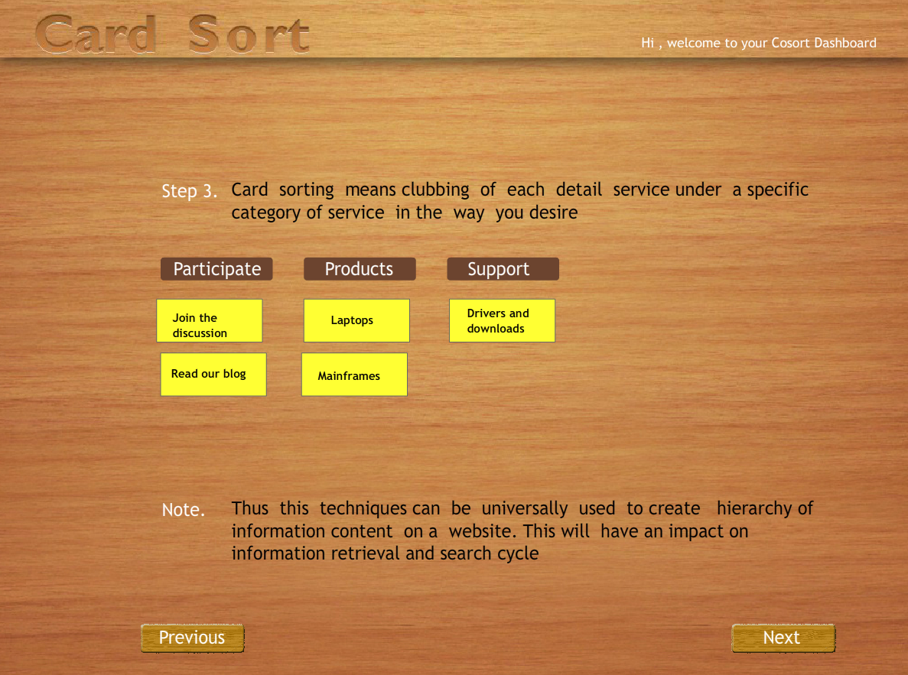
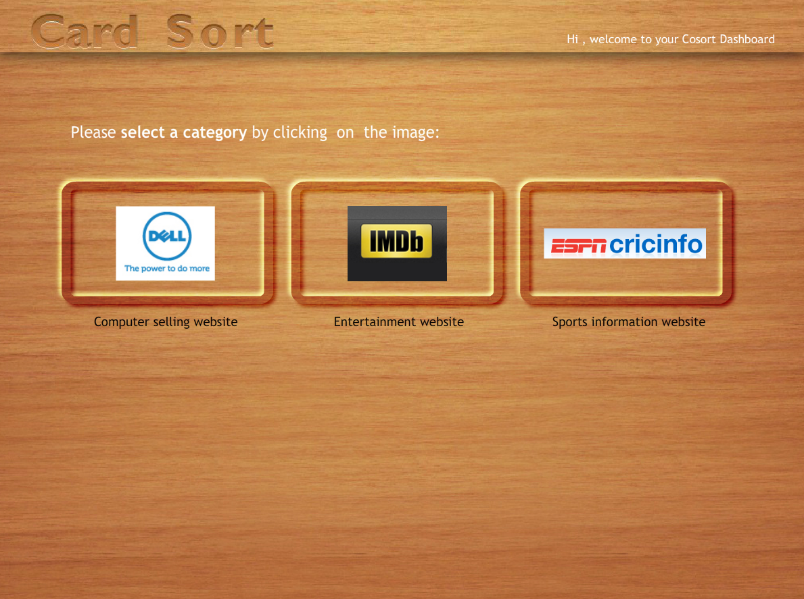
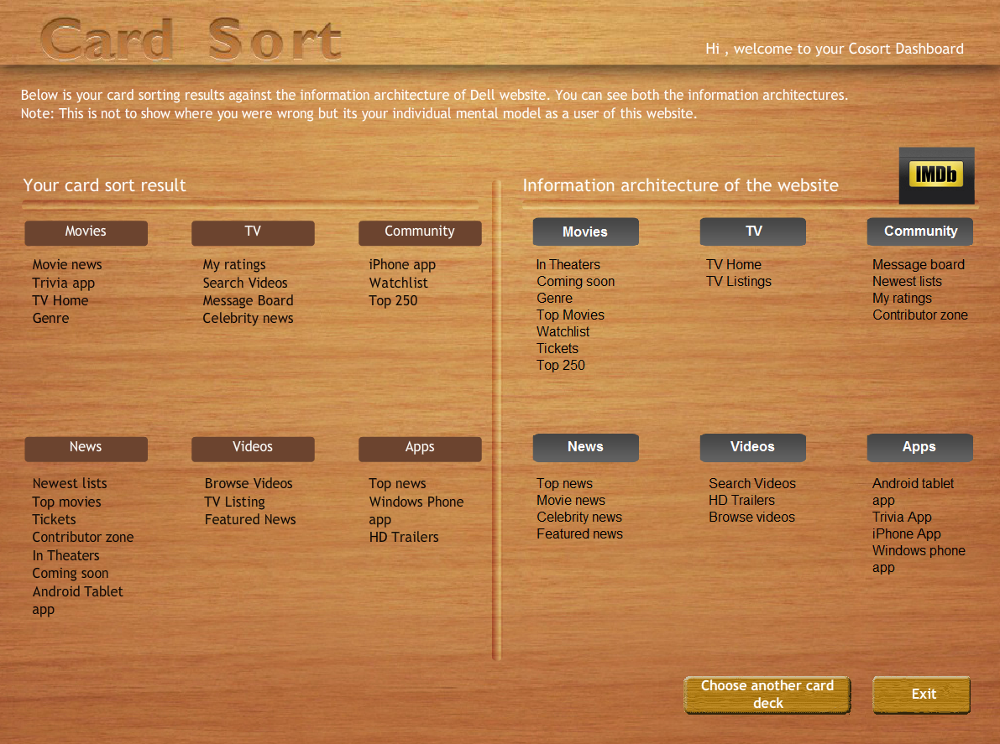
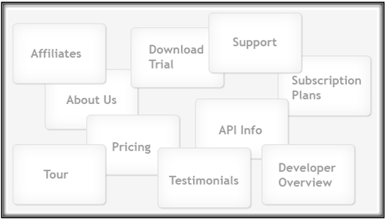
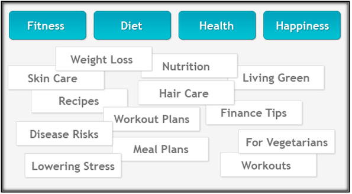

Card Sorting
Card sorting is a technique used by information architects that is used as input for defining stucture of a website or a product. The subject experts or "users", are suppose to create a category tree or folksonomy from the information provided. Creating folksonomy helps in designing information architecture, workflows, menu structure or web site navigation paths.
Card sorting helps to build the structure for a website, decide what to put on the home page, and label the home page categories. It also helps to ensure that you organize information on your site in a way that is logical to your website users. It is most helpful while designing a navigation structure for an environment that offers an interesting variety of content and functionality.
Definition
Card sorting is a user-centered design method for increasing a system’s findability. The method involves users in grouping information by sorting a series of cards, each labeled with a piece of content or functionality, into groups that make sense to users or participants. Participants in a card sorting session are asked to organize these cards or content in a way that makes sense to them. Participants are also suppose to label these groups.Thus card sorting can provide insight into users’ mental models, illuminating the way that they often tacitly group, sort and label tasks and content within their own heads.
Methods
Open Card Sorting:
Participants are given cards with no pre-established groupings. They are asked to sort cards into groups that they feel are appropriate and then describe each group.
Closed Card Sorting:
Participants are given cards showing site content with an established initial set of primary groups. Participants are asked to place cards into these pre-established primary groups. Closed card sorting is useful when adding new content to an existing structure, or for gaining additional feedback after an open card sort
Advantages
Simple:
Card sorts are very easy to implenent by organizers and participants as well.
Cheap:
Cost of a stack of 3×5 index cards, sticky notes, a pen or printing labels, and your time.
Quick to execute:
Can perform several sorts in short time, that gives significant amount of data.
Established:
The technique has been used for over 10 years, by many designers.Involves users: Information structure suggested by a card sort involves real users and hence it should be easier to use.
Card sorting is used when…
1. Variety in the items to be organized is large.
2. Similarities among items make them difficult to divide clearly into categories.
3. Users may differ significantly in how they view items & groupings of items.
4. Designer has to explore how people group items, so that he can develop structures that maximize the probability of users being able to find items.
Card sorting is a formative techniques and should be used as an input for
Designing a new site.
Designing a new area of a site.
Redesigning a site.
Research into what users need out of the site.
A functionality audit/inventory.
Card sorting is a great, reliable, inexpensive method for finding patterns in how users would expect to find content or functionality.

After performing this experiment
1. You will understand the card sorting technique used for information architecture design.
2. You can actually perform online card sorting for three sample cases and compare results obtained for various user's.
3. You will be able to apply card sorting method to any other design situation for gathering user's mental models helpful in organizing the content and navigation on a webpage.

Demo: Step 1 to 4
Sorting Tool: Step 5,6,7
1. At the beginning you will be introduced to card sorting once again. Press <next> to proceed.

2. In next screen you will be shown some dummy predefined categories for grouping the cards.
Press <next> to proceed and <previous> to go back.

3. Next some dummy cards will be displayed which have to be sorted.
Press <next> to proceed and <previous> to go back.

4. The screen will display the cards sorted as per predefined categories.
Press <next> to proceed and <previous> to go back.

5. Now you will be asked to choose any one from three websites.
Press <next> to proceed and <previous> to go back.

6. A set of twenty-five unsorted cards with predefined categories will be shown. Drag each card and post it under category of your choice. You can see your progress on the progress-bar below. You will not be able to move ahead unless all cards are sorted. You can drag and remove a card put under some category and put it under different category.
7. Press <done> button after you sort all cards.The tool will display a comparative chart of your sorting outcome and a common or ideal information architecture side-by-side..



1. When should a designer use a card-sorting technique?
2. Can you explain in details the card sorting procedure?
3. What are the drawbacks of the card sorting technique?
4. When to use open card sorting against closed card sorting technique?
5. What are the deliverables of this technique and how are they useful in further design process?
Open Card Sorting ( * refer procedure below )
Refer to the figure below. You can see some cards that have names of the website sections written on them. Create such cards and use them with five people for card sorting. These participants are supposed to sort them into groups of their choice and also name these groups.

Please observe following things from the data obtained
What names do the participants choose for section titles?
What is the average number of categories created by participants?
Were there sub-categories or sub-groups?
Does the content flow logically?
Closed Card Sorting ( * refer procedure below )
Refer to the figure below. Some cards are shown with names of the website sections written on them. Also some categories are predefined in blue color. Create such cards and use them with five people for card sorting. The participants are supposed to sort them into the group of their choice.

Please observe following things from the data obtained
Which cards do the participants put under each category?
Do you observe any pattern in card sorting?
Can you arrive at some solution for information flow design?
* Conducting Generic Card Sort
Making cards ready
1. List the content topics or types of information that you are likely to have on the site or list the most important types of content on your current site.
2. Write each topic on a separate index card. Limit yourself to 100 cards or less. (About 50 is a good number.)
3. Have blank cards available for participants to add topics and to name the groups they make when they sort the cards. Consider using a different colored card for having participants name the groups.
4. Plan about one hour for each session - longer if you have many cards.
5. Arrange for a space where the participant has enough room to spread the cards out on a table. A conference room works well.
6. Plan to have someone take notes as the participant works and thinks aloud.
Sorting Session
1. Show the participant the set of cards and explain that you are asking for help to find what categories of information should be on the site's home page and what those categories should be called.
2. Ask the participant to talk out loud while working. You want to understand the participant's thoughts and rationale.
3. Let the participant add cards - for example, to indicate lateral hyperlinks or additional topics. Let the participant put cards aside to indicate topics the participant would not want on the site. Minimize interruptions but encourage the participant to think aloud.
4. Give the participant a stack of different colored cards and ask them to use the colored card to name each group.
Analyzing Data
1. Write down the names that participant gave to each grouping and the numbers of the cards the participant included under that name.
2. Create a computer file for each session. Working from your original list of topics, move topics around to recreate each participant's groupings and enter that participant's name for the groupings.
3. Use your notes and recordings of the participants' names and card numbers under each person's name to find commonalities from different sessions.
4. For a more detailed analysis, consider using an Excel spreadsheet to show the relationship between the cards or use one of the available software programs to analyze your data.
( Reference : http://www.usability.gov/methods/design_site/cardsort.html )

Articles and Urls(as on 23/4/2012)
1. Hiroshi Ishii, Minoru Kobayashi, Kazuho Arita. Iterative design of seamless
collaboration media. Communications of the ACM, August 1994/Vol. 37, No.8
2. Jakob Nielsen. "Card Sorting to Discover the Users' Model of the Information
Space".Useit. 1995.[online]
http://www.useit.com/papers/sun/cardsort.html [Accessed on 10 Oct 2011]
3. Jakob Nielsen. "Card Sorting: How Many Users to Test".Useit. 2004. [online]
http://www.useit.com/alertbox/20040719.html [Accessed 10 Oct 2011]
4. Card Sorting- Introduction[Online].
Available from http://www.syntagm.co.uk/design/cardsortintro.shtml
[accessed 25 August 2011]
5. Neil Turner. UX for the masses. [online]
http://www.uxforthemasses.com/online-card-sorting/ [Accessed 10 Oct, 2011.]
6. http://www.usability.gov/methods/design_site/cardsort.html
7. http://www.boxesandarrows.com/view/card_sorting_a_definitive_guide